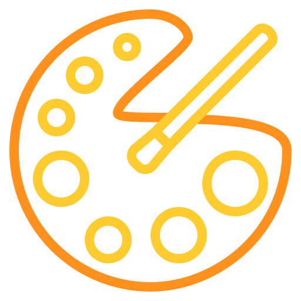
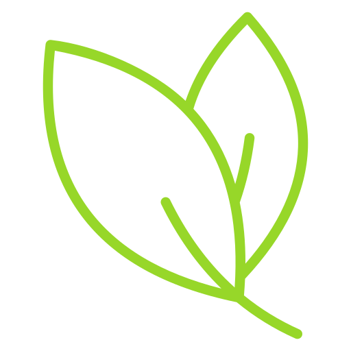

Meu porquê 

Por que eu pinto?Eu pinto porque nem sempre sei explicar o que eu sinto. A arte virou um espaço meu, sem pressão, sem regra… só eu, minhas cores e o que existe aqui dentro.

A arte faz bemE não é só sobre mim. Atividades criativas ajudam a acalmar a mente, melhorar o foco e até reduzir o estresse. Pintar é, de certa forma, uma pausa no meio do caos.